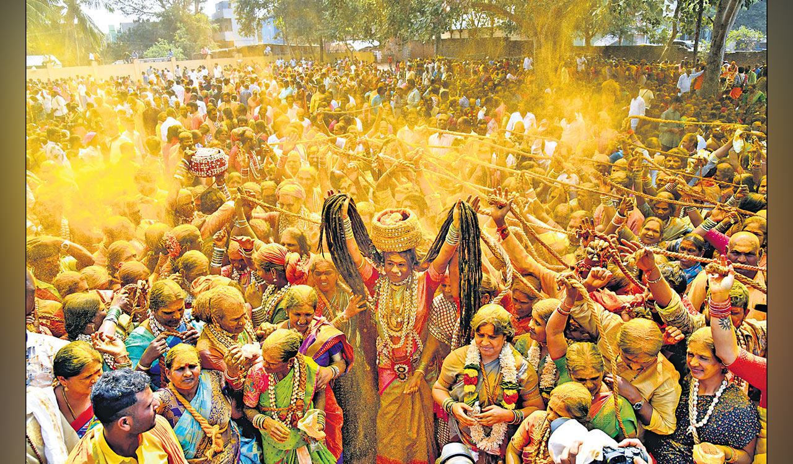

Andhra Pradesh
Srisailam: Mallikarjuna's Peak
Welcome to the sacred peaks of Srisailam, a Tirtha of unparalleled significance where the divine energies of Shiva and Shakti converge. Nestled amidst the dense Nallamala forests, this holy mountain is one of the very few places in Bharatavarsha to be revered as both one of the twelve Jyotirlingas and one of the eighteen Maha Shakti Pithas. A pilgrimage here is a journey into the heart of cosmic unity.
The Dual Puranic Origins
The Legend of the Jyotirlinga: The *Shiva Purana* narrates that after a divine contest with his brother Ganesha, a disappointed Lord Kartikeya retreated to the Kroncha mountain. To console their beloved son, Lord Shiva and Goddess Parvati followed him and manifested on this peak—Shiva as an Arjuna tree and Parvati as a Mallika flower. From this divine union, they became worshipped as the single Jyotirlinga, **Mallikarjuna Swamy**.
The Legend of the Shakti Pitha: This is also the sacred ground where the *Greeva* (Upper Neck) of Goddess Sati is believed to have fallen. Here, the Divine Mother is worshipped as **Bhramaramba Devi**. Legend tells of how she took the form of a swarm of bees (*Bhramaras*) to vanquish the demon Arunasura, establishing her fierce and protective presence on this holy mountain.
Key Spiritual Experiences
Sparsha Darshan of Mallikarjuna Swamy: Srisailam is one of the few Jyotirlinga temples where devotees are traditionally permitted to perform *Sparsha Darshan*—the act of physically touching the sacred lingam. This intimate form of worship allows for a direct and powerful transmission of divine energy.
Worship of Bhramaramba Devi: A visit to the Bhramaramba temple is essential to complete the pilgrimage. One can hear a faint buzzing sound within the temple walls, believed to be the eternal presence of the Goddess in her bee form.
Patalaganga Snan: A holy dip in the sacred Krishna River, which flows through the valley below, is a vital act of purification. Pilgrims can reach this spot, known as Patalaganga, via a ropeway or by descending a flight of ancient steps.